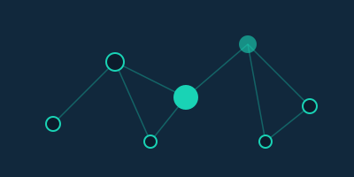
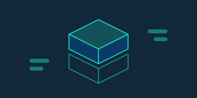
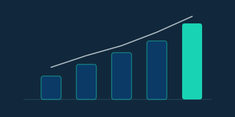

AI & Automation
Support inbox triage for an e-commerce group
A language-model classifier tags and routes incoming tickets, drafts a reply for common cases and leaves the final send to an agent.
41% faster first response
AI & Automation
Invoice capture for a logistics operator
Scanned freight invoices are read, checked against purchase orders and pushed to the ERP, with exceptions queued for review.
3,200 invoices a week processed hands-free
Telecom
OTP delivery layer for a digital bank
Multi-carrier failover for one-time passwords, with per-country routing rules and voice fallback when SMS is slow.
99.2% of codes delivered within 10 seconds
Telecom
Usage reconciliation for an MVNO
A nightly pipeline matches call detail records from two host networks against the billing system and flags gaps before invoices go out.
2.1% of lost revenue recovered

Enterprise
Field service app for a utilities contractor
Offline-first mobile app for 900 technicians, syncing job sheets, photos and signatures whenever a connection appears.
27% more jobs closed per shift
Enterprise
Cloud move for a manufacturing ERP
Lift, then refactor: the on-premise ERP moved to managed cloud services with infrastructure as code and blue-green releases.
34% lower monthly hosting cost

Fintech
Merchant onboarding for a payments start-up
Self-serve sign-up with document checks, risk scoring and a review console, replacing a spreadsheet-driven process.
5 days to 4 hours average approval time
- TypeScript
- Node.js
- PostgreSQL
Fintech
Real-time ledger for a lending platform
An event-sourced ledger gives finance and support the same up-to-the-second view of every loan balance and repayment.
0 reconciliation breaks in the first year